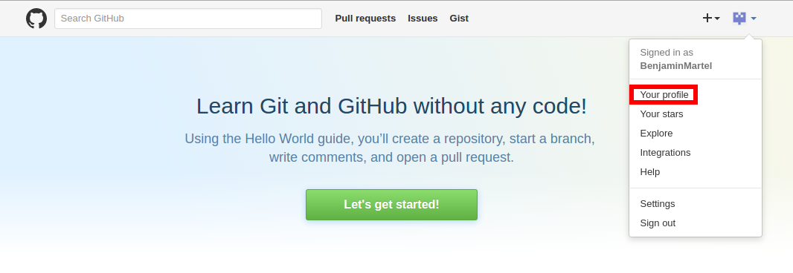
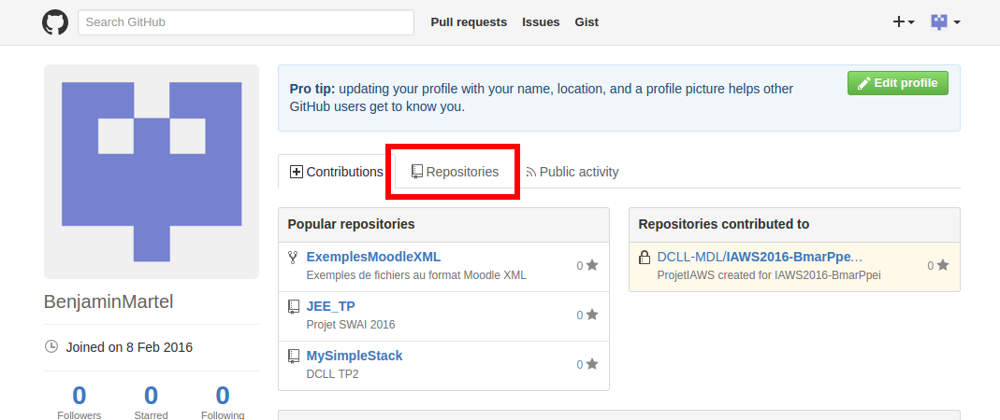
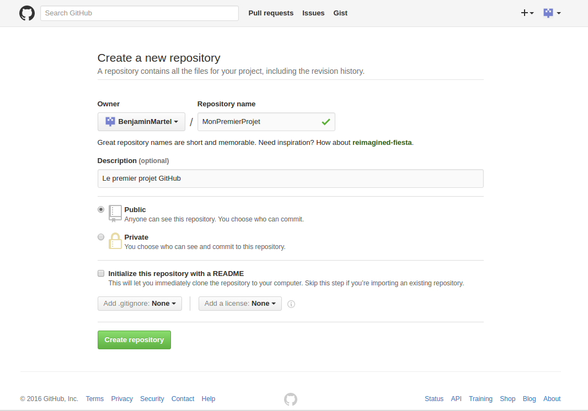
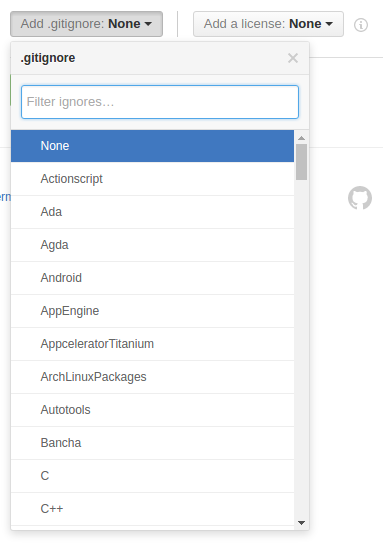
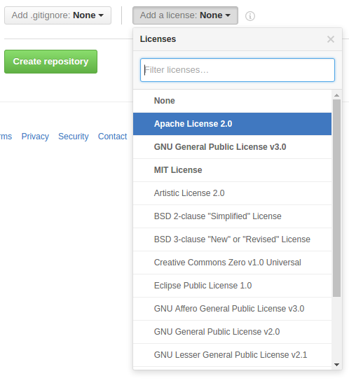
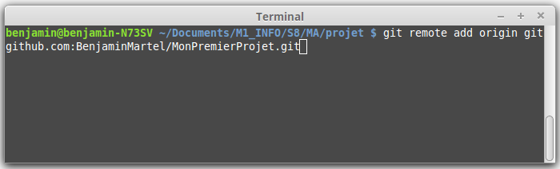

Pour créer un projet il faut initialement installer Git et se créer un compte GitHub .
Ensuite, Il faut se rendre sur le site GitHUb et se connecter. Rendez-vous sur votre profil comme ceci :
Puis se rendre dans “Reporitories” comme ceci :
Ensuite, cliquer sur le bouton vert "New" à droite. Vous serez redirigé sur cette page :
Renseignez le nom de votre projet (obligatoire) et sa description si vous le souhaitez.
Les deux boutons d’en dessous signifie que votre projet sera public ou privé c’est-à-dire accessible par d’autres utilisateurs ou pas. La version privée nécessite un compte payant, il est donc recommandé de mettre public pour la suite du tutoriel.
La case suivante permet de rajouter un fichier README qui permet à l’utilisateur de mettre une description du projet ou des instructions à effectuer avant le démarrage de celui ci par exemple.
Vient ensuite les deux menus déroulant permettant de rajouter respectivement un fichier .gitignore et d’ajouter une licence au projet.
 Pour le fichier .gitignore, cela permet d’ignorer certains types de fichiers ou dossiers lors du “push” de votre projet sur GitHub. (Pour comprendre ce qu’est un “push” veuillez lire la description dans le lien)
L’autre menu déroulant permet de rajouter les différentes licences de votre projet.
Une fois tout ceci configuré comme vous le souhaitez, vous n’avez plus qu’à cliquer sur le bouton vert “Create repository”.
Rendez vous dans votre répertoire où vous voulez développer votre projet. Ouvrez un terminal et rentrez cette commande pour lier votre projet et le dépot sur GitHub :
Et voila vous avez créer votre propre projet.